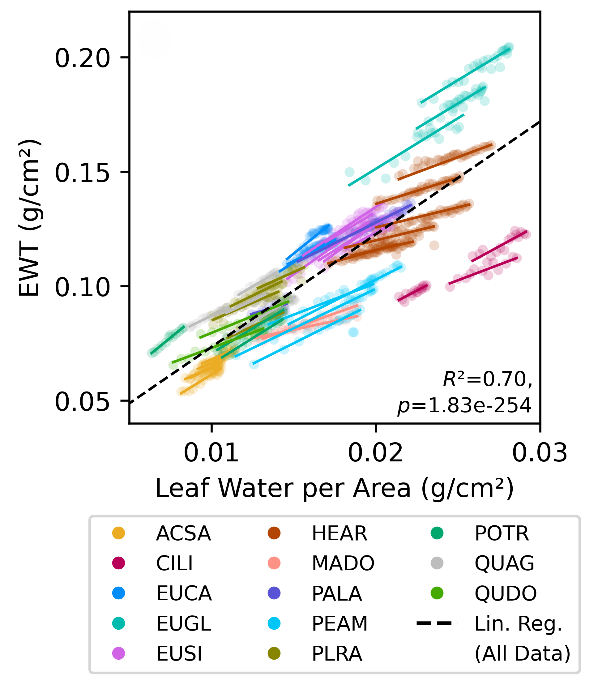
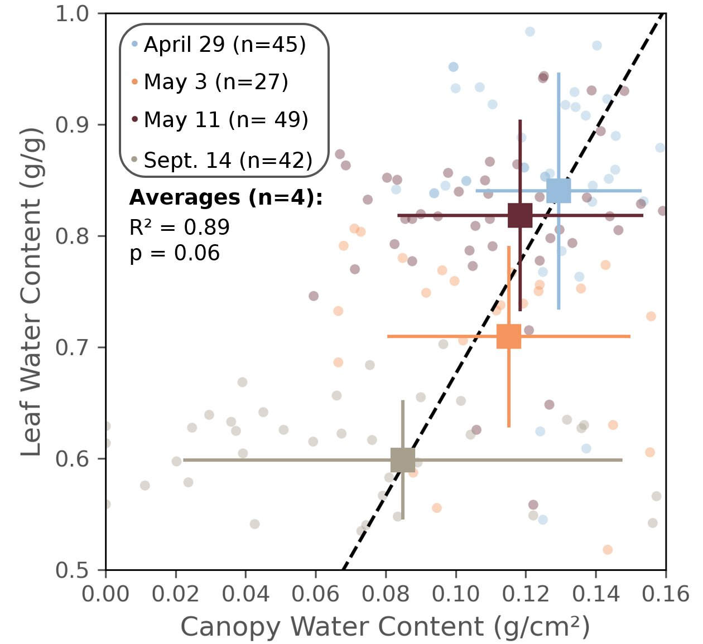

Publications
Selected Publications
Detecting drought stress from the leaf to the landscape: Is canopy structure or leaf desiccation more influential in tree canopy spectral responses to declining water?
We collected measurements of spectral reflectance while drying leaves from 13 species, and used that data to estimate how a tree experiencing drought stress would "look" from an airborne or spaceborne imaging spectrometer. We found that spectral responses to drying were species-specific at the leaf level and confounded by varying canopy structure in remote sensing data, but that these complicating factors could likely be largely mitigated by leveraging time series data.
The definitive version is available at http://onlinelibrary.wiley.com/journal/10.1111/(ISSN)1469-8137
View Paper PDF
Canopy water content is related to variability in leaf water over time but not across space in an oak savanna ecosystem
We compared subseasonal variation in canopy water content, leaf water content, leaf area index, and leaf water potential in a California oak savanna ecosystem. We found that canopy water content had no sensitivity to leaf water content or leaf water potential across space, but that over time, as drought stress increased, canopy water content declined.
The definitive version is available at https://www.sciencedirect.com/science/article/pii/S0034425726001446
View Paper PDF
Full Publication List
View My Google Scholar Profile-
2026
Allen J, Anderegg LDL, Roberts DA, Trugman AT. Detecting drought stress from the leaf to the landscape: Is canopy structure or leaf desiccation more influential in tree canopy spectral responses to declining water? New Phytologist.
-
2026
Allen J, Trugman AT, Anderegg LDL, Boving I, Roberts DA. Variability in leaf water is related to canopy water content over time but not across space in an oak savanna ecosystem. Remote Sensing of Environment.
-
2025
Boving I, Allen J, Brodrick P, Chadwick KD, Trugman AT, Anderegg LDL. The unstable relationship between drought status and leaf water content complicates the remote sensing of tree drought stress. Global Change Biology.
-
2024
Chadwick D, ... [111 authors including Allen J] Unlocking Ecological Insights from Subseasonal Visible-to-Shortwave Infrared Imaging Spectroscopy: The SHIFT Campaign. Ecosphere.